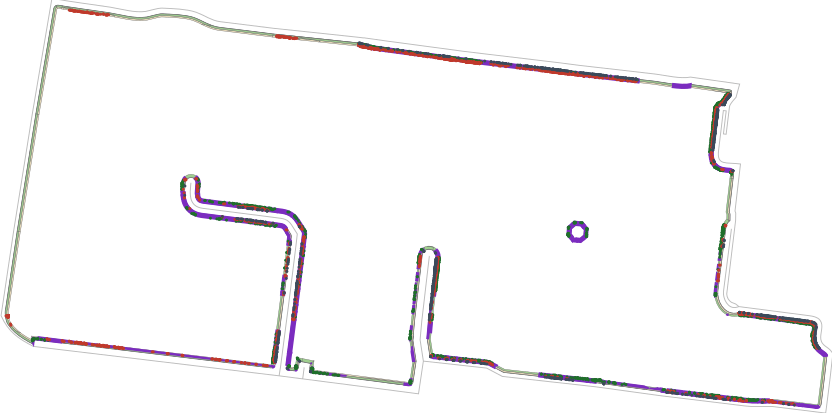
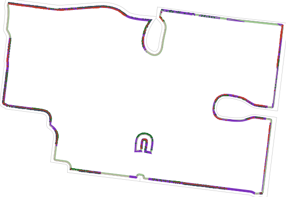
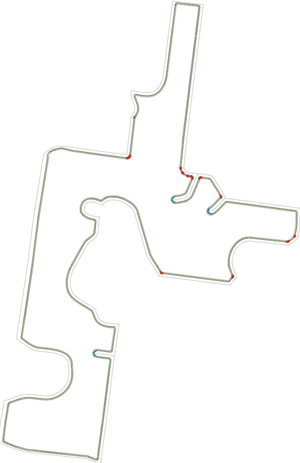

slab-bb-base (dac3525d mesh) against bands-blend.json (fdcf0bfc pieces). Fills: curb grey, walk sand, lawn green. Dots: the flagged copies, coloured by their mesh class (walk red, lawn dark green, curb slate).
Tile 182: the 8914 copies the first instrument flagged; corrected, 0. Purple outlines: pieces whose rings[0] is not their largest ring.

Tile 173: the 8249 copies the first instrument flagged; corrected, 1. Purple outlines as above.

Tile 67, the corrected residue's largest: 1169 copies (red: a sidewalk copy of dac3525d's mesh inside an fdcf0bfc lawn piece). Blue: unpadded ② arcs.
